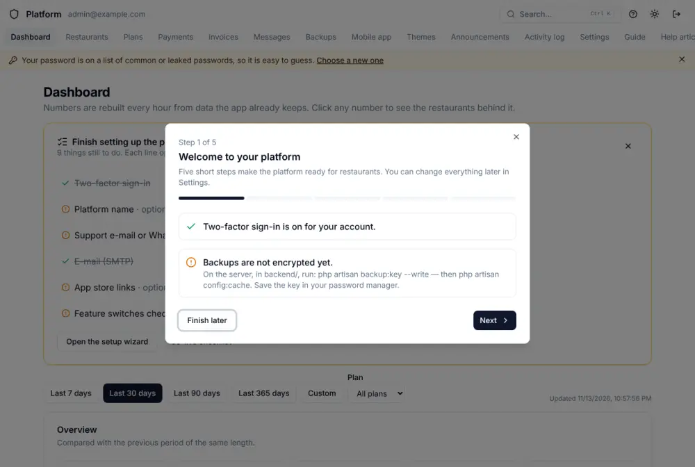
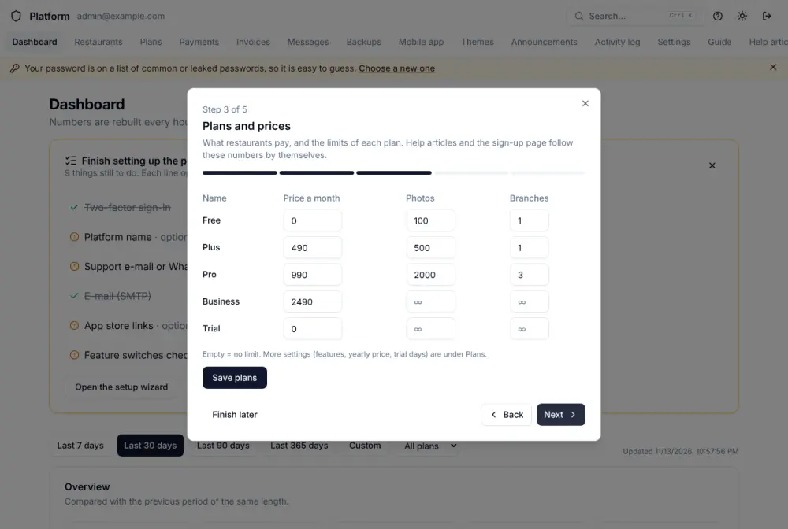

Setup from zero to live, daily use, problems and answers, and a cheat sheet.
This guide is for Super Admins: the people who run Menu.
Every page of the panel has a ? button. It opens the matching page of this guide.
The same guide is in the code (docs/admin-guide/) and as one PDF (docs/admin-guide.pdf). Technical details are in docs/deploy.md and docs/security.md.
Menu runs on shared hosting with cPanel or on a VPS with Nginx. No Docker is needed.
The server needs:
pdo_mysql, mbstring, openssl, gd (with WebP), intl, zip, exif, bcmath, fileinfo.upload_max_filesize = 10M, post_max_size = 12M, memory_limit = 256M, OPcache on.Node is not needed on the server. You build the admin on your computer.
Build the release on your computer:
git checkout main && git pull
cd frontend && pnpm install --frozen-lockfile && pnpm build && cd ..
cd backend && composer install --no-dev --optimize-autoloader --classmap-authoritative && cd ..
Upload the whole backend/ folder. Don't upload .env, node_modules/ or frontend/.
Next: Domain and HTTPS.
backend/ outside public_html, for example /home/USER/menu/backend./home/USER/menu/backend/public.certbot --nginx on a VPS.https://your-domain/up. It must say "Application up" (after the next steps).The public folder must be the document root. The fast menu pages and QR links need its .htaccess file. It is a hidden file: make sure it was uploaded.
Cloudflare? Use SSL mode Full (strict). Turn off Rocket Loader. Set TRUSTED_PROXIES=* in .env (next page).
Next: The .env file.
Copy .env.example to .env in backend/. Set at least:
APP_NAME="Menu"
APP_ENV=production
APP_DEBUG=false
APP_URL=https://menu.example.com
TRUSTED_PROXIES= # * behind Cloudflare or a host proxy; empty otherwise
DB_DATABASE=...
DB_USERNAME=...
DB_PASSWORD=...
SESSION_SECURE_COOKIE=true
QUEUE_CONNECTION=database
LOG_STACK=daily
https://, with or without www.Set the file to 600 permissions. Save a copy of .env in your password manager. The APP_KEY in it is needed to read saved passwords and two-factor secrets.
Next: Database, migrate and cache.
.env.backend/ and run:php artisan key:generate --force
php artisan migrate --force
php artisan platform:aggregate
php artisan optimize
migrate creates the tables, the plans and the default Terms and Privacy texts. optimize caches the config, routes, views and events.
storage/, bootstrap/cache/, public/media/, public/menu-cache/, public/menu-assets/.Never run the demo seeder on the live server. It makes restaurants with known passwords. It refuses when APP_ENV=production, but don't try.
After every update run php artisan migrate --force, php artisan optimize and php artisan menu:refresh-pages --all.
Next: Backup key.
Backups hold every restaurant's data. Encrypt them:
php artisan backup:key --write
php artisan config:cache
This adds BACKUP_KEY to .env.
Save the key in your password manager now. Without it, no backup can be restored. If you make a new key later, old backups still need the old one.
Without a key, backups are plain zips, the Backups page shows a warning, and no off-site copy is made.
Next: Cron.
In cPanel → Cron Jobs, add this line, every minute:
* * * * * cd /home/USER/menu/backend && php artisan schedule:run >> /dev/null 2>&1
It runs everything: e-mails, happy-hour menu updates, the nightly backup at 02:30, monthly reports, push notifications and clean-up.
Some hosts need the full PHP path, for example /opt/cpanel/ea-php83/root/usr/bin/php.
Check it: after two minutes, run php artisan schedule:list. The Super Admin dashboard → System health shows "cron last run".
Next: E-mail (SMTP).
The password is stored encrypted and never shown again.
So e-mails don't land in spam, add three DNS records for the domain of the from address: SPF, DKIM and DMARC. cPanel → Email Deliverability can add SPF and DKIM for you. Details: docs/deploy.md section 7.
Next: The first Super Admin.
Super Admins are made on the server, not in the app. In backend/:
php artisan tinker --execute="\$u = App\Models\User::create(['name' => 'Your Name', 'email' => 'you@example.com', 'password' => 'a-long-password']); \$u->forceFill(['is_super_admin' => true, 'email_verified_at' => now()])->save();"
SUPER_ADMIN_PATH in .env (default super; choose something hard to guess). Restaurant teams sign in at https://your-domain/signin, which doesn't let Super Admins in.Now the whole panel opens, and the setup wizard starts. Five short pages:

Finish later is fine. The dashboard then shows a list of what is still to do. Open the wizard again from Settings → Setup wizard.
Next: Firebase for the app.
The app works without Firebase. Then notifications only show in the app's inbox.
For push notifications on phones:
public_html, for example storage/app/private/firebase.json, permissions 600..env: FCM_CREDENTIALS=storage/app/private/firebase.json, then php artisan config:cache.The cron line sends the pushes. Keep a copy of the file in your password manager: it is not in the backups.
The app itself needs google-services.json when it is built: see docs/firebase.md in the app repository.
Next: Go-live checklist.
Server
backend/ outside public_html. Document root → backend/public. HTTPS works. .htaccess uploaded..env: APP_ENV=production, APP_DEBUG=false, APP_URL=https://…, database, SESSION_SECURE_COOKIE=true, TRUSTED_PROXIES if behind a proxy.php artisan key:generate --force, migrate --force, platform:aggregate, optimize..env (with APP_KEY) and BACKUP_KEY saved in your password manager./up says "Application up".Platform
Smoke test, on a phone and a computer
Restaurants lists every restaurant. Search by name or address. Filter by State: trial, active, grace, read-only, unavailable, suspended, pending.
Create one: tap New restaurant. Type the name, menu address, owner's name and e-mail, trial plan and days. The owner gets an e-mail to choose a password.
Open one to see:
New sign-ups waiting for approval have Approve and Reject buttons. A rejected owner gets your reason by e-mail.
Restaurants pay you by mobile money or bank transfer. You record it:
The paid period is extended. An invoice is made and e-mailed to the owner.
Payments shows all payments with totals. Invoices lists every invoice; you can download or void one.
Announcements show on restaurant dashboards (and as a push in the app).
Messages are e-mails to restaurant owners: news, offers and reminders.
For the mobile app only, use Mobile app: send a push notification.
Open Plans. Today's plans:
The live list of plans, with prices and limits, is shown here in the panel (Super Admin → Guide).
Change a plan: tap it. You can change:
Help articles, the landing page and the sign-up page read prices and limits live from here. You never need to change a text when you change a price.

Lowering a limit doesn't delete anything. A restaurant over the limit just can't add more.
Old plans: a plan can be replaced by another. Its restaurants move to the new plan when their paid time ends.
A theme is a ready-made look: a colour, a font and a menu style. Restaurants pick one in Appearance → Themes, then change it.
A theme with a menu style that a plan doesn't include is shown with a lock to those restaurants.
A feature can be switched in three places. The strongest wins:
Settings → Features lists every feature with On for everyone or Off for everyone, and how many plans and restaurants have it off.
When a feature is off, its buttons and its help articles are hidden. Existing data is kept. For example, sold-out marks come back when you switch "Sold out" on again.
At least one menu style must stay on. Sign-up off closes the sign-up page.
Open Mobile app → Access.
Phones get the change within a minute or two: the app checks when it opens and when it comes back to the screen. The server also refuses app requests while it is closed.
The four emergency switches (maintenance, sign-up, push, Super Admin app sign-in) are also in the app itself, on the Super Admin screen.
Open Mobile app → Versions.
Versions look like 1.4.0. The minimum can't be higher than the latest.
Order: publish the new version in the stores first. Wait until the store shows it. Then raise the minimum.
App features are switches that only exist in the app:
Restaurant features (sold out, branches, insights…) follow Settings → Features and the plans by themselves.
Links: the Google Play and App Store pages (for updates), Privacy, Terms and the support WhatsApp number. Empty = this site's own pages.
/inbox, or an https:// link.It goes to the in-app inbox of everyone chosen who is signed in to the app, and as a push to phones that allow it. Sent pushes shows the history.
Up to 10 a minute. Don't send too many: people turn notifications off.
Devices lists every phone signed in to the app: person, restaurants, device, Android or iOS, app version, push on or off, last seen. Search and filter by platform or kind.
Stats shows active devices (7 and 30 days), people, Android vs iOS, the versions in use, the push opt-in rate, and how many phones must update.
Open Settings → Sign-up.
.env first (the page says when they are missing). Setup: docs/google-login.md. Super Admins always use password + two-factor.Unconfirmed sign-ups are deleted after 7 days.
Open Settings → General. Scroll to Terms of use and Privacy policy.
The defaults are a draft. Read them and change them for your business and your country. Ask a lawyer.
The texts are shown at /terms and /privacy, at sign-up and in the app. Every saved version is kept, so you can show what was valid on a date.
The admin, the app and the guest menus are in English today. Restaurants type their dishes in their own words.
Default language and Default currency for new restaurants are in Settings → General.
Adding a language for the screens needs a developer: the texts are in backend/lang/, frontend/src/locales/ and the app's lib/l10n/. Every screen uses these files, so a new language is a translation job, not a code change.
Landing page (top menu) is the public home page at https://your-domain.
Prices on the landing page come from Plans: you never type them here.
Settings → Logo & link preview
Settings → Billing: your company name, address and tax number on invoices, the invoice number prefix, the footer text and the VAT rate.
Open Help articles. Choose Restaurant help or Super Admin guide.
The list shows each article, its topic, if it is Default, Changed or Your own, and the Was this helpful? counts. Articles with many "No" answers need better words.
Change an article: tap it. Edit the text in Markdown. The Preview shows what a restaurant sees. Choose a restaurant to check feature blocks and live numbers. Tap Save.
Reset to default brings back the shipped text.
New article: tap New article, choose a topic and write it.
Never type a price, a limit or a number of days. Use a placeholder: {{plans}}, {{plan.pro.price}}, {{signup_plan.photos}}, {{trial_days}}, {{support}}. Then the text is always right. Blocks like <!-- if sold_out -->…<!-- endif --> show only when the feature is on.
One click, no reason needed. You see Viewing as … at the top. Tap Back to platform to stop.
It works in the app too: open the restaurant and tap Log in as.
The demo has a café with 67 dishes and real photos, three showcase restaurants (styles A, B, C), and about 30 small restaurants with a year of payments.
On a test computer only:
php artisan migrate:fresh --seed --seeder=DemoSeeder
php artisan demo:photos
The password for all demo accounts is password. The demo Super Admin is admin@example.com.
Never on the live server. It refuses when APP_ENV=production. The setup wizard shows if demo restaurants exist and can delete them.
Every night at 02:30 the database and every photo are saved in one zip, outside the public folder.
If no backup works for 26 hours, the dashboard shows a warning and every Super Admin gets one e-mail a day.
Restore has no button on purpose: it replaces everything. Follow "Restoring a backup" in docs/deploy.md.
Test a restore once, on a copy of the site.
Activity log (in the panel) shows changes on the platform and in restaurants: who, what and when. Filter by area, action or person.
Security log (on the server) has one line for each security event: failed sign-ins, locked accounts, wrong two-factor codes, password resets, blocked sign-ups, refused uploads. It is in storage/logs/security-YYYY-MM-DD.log, kept 30 days.
Each line holds only short codes for the e-mail and the address, never passwords or codes.
Quick check: grep login.locked storage/logs/security-*.log.
Good habits: two-factor for every Super Admin, a password manager, and fewer Super Admins.
backend/public, and .htaccess must be uploaded.APP_URL must match the address in the browser (https, www).upload_max_filesize, post_max_size, memory_limit, GD with WebP, public/media/ writable.php artisan menu:refresh-pages --all. No "Cache Everything" rule for HTML./q/CODE needs the .htaccess rule and public/qr.php.BACKUP_KEY. The Backups page shows the error.FCM_CREDENTIALS in .env, cron running, Push notifications on in Mobile app → App features.Every day (5 minutes)
Every week
Every month
docs/deploy.md section 9).Every year
/.well-known/security.txt (a test reminds you).